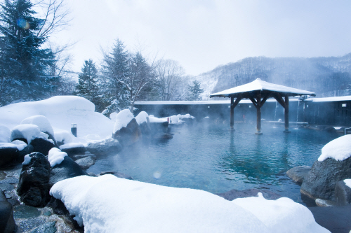

일본 유명 온천지
일본의 온천은 일본어로 “온센”이라 불린다. 일본은 화산 활동이 많은 나라로서, 전국에 수천 개의 온천이 있다. 온천은 전통적으로 목욕 및 일본의 관광에 중요한 역할을 한다. 온천은 지하수가 지열에 의해 더워져 지표로 나온 것인데 화산 주변은 지온이 매우 높기 때문이다. 따라서 온천은 화산 주변에 주로 발달한다. 온천은 부상 치유 효과가 뛰어나 사슴, 학, 원숭이 같은 동물들이 다쳤을 때 온천욕을 했다고 전해진다. 일본의나가노에 자리 잡은 지고쿠다니 야생 원숭이공원에서는 지금도 원숭이가 온천욕 하는 모습을 볼 수 있다.
